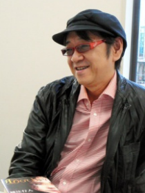
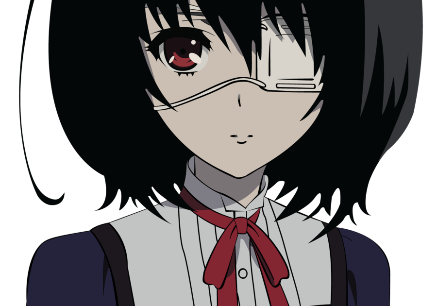
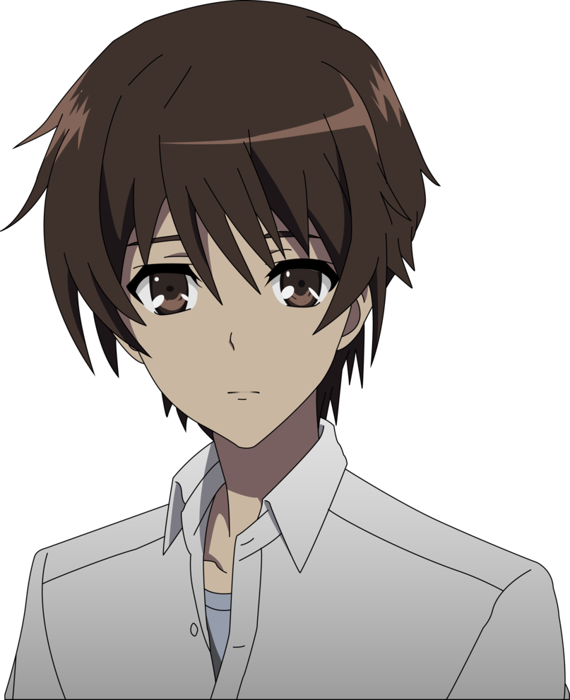
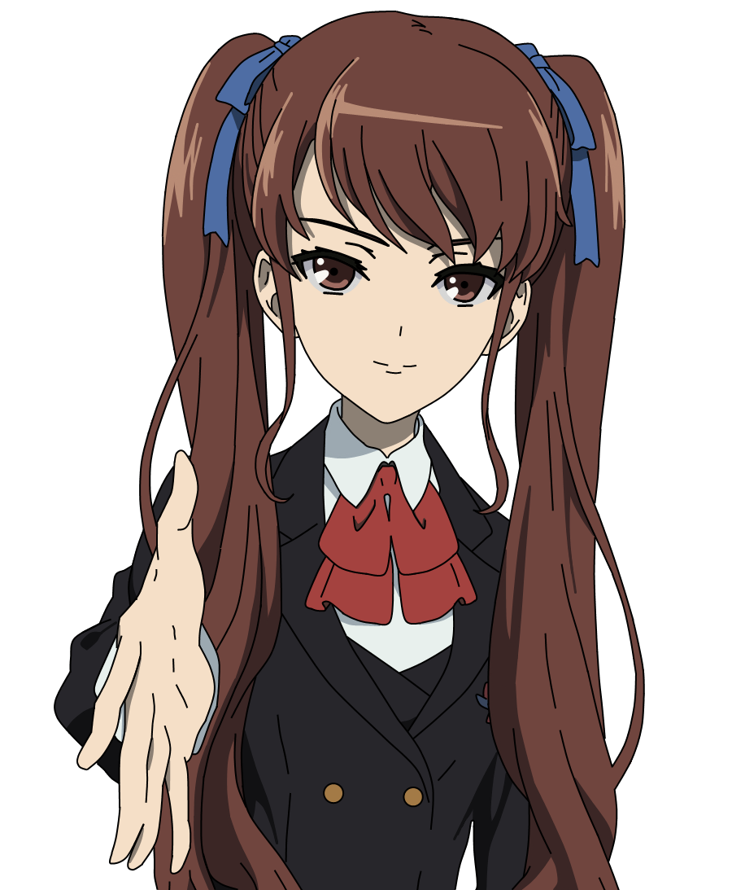
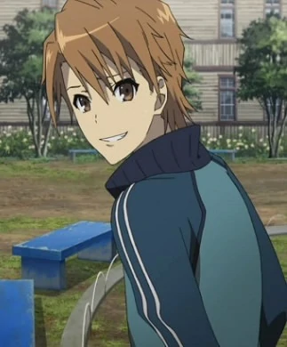

Yukito Ayatsuji

Naoyuki Uchida, que escreve sob seu pseudônimo Yukito Ayatsuji, é um escritor japonês de mistério e horror. Ele é um dos fundadores do Honkaku Mystery Writers Club of Japan e um dos escritores representativos do novo movimento tradicionalista na escrita de mistério japonesa.
Another
Há 26 anos atrás, havia uma aluna chamada Misaki Yomiyama na escola Yomiyama Norte, que estudava na sala 3. Uma
estudante honorária, também era boa em esportes, Misaki era muito popular entre seus colegas e até os professores tinham
afeição por ela. Quando Misaki morre inesperadamente, a classe 3-3 decide continuar agindo como se ela ainda estivesse
viva. Contudo, quando a foto da graduação da sala foi tirada, eles viram na foto alguém que não deveria estar lá:
Misaki, a estudante “extra”.
O novo estudante do nono ano, Sakakibara Kouichi, 15 anos, se muda de Tokyo para Yomiyama, a cidade natal de sua mãe,
devido ao seu pai ter ido trabalhar na Índia. Sua transferência foi para a escola Yomiyama classe 3-3. Por causa de um
Pneumotórax, Kouichi teve que ser hospitalizado bem quando as aulas iriam começar. Durante sua hospitalização os
representantes de sala Kazami Tomohiko, Akazawa Izumi e Sakuragi Yukari o visitam. Antes que ele fosse liberado, Kouichi
conhece no elevador uma garota vestida com o mesmo uniforme de sua escola e um tapa-olho. Ela vai até o subsolo do
hospital, onde é localizado o necrotério. Seu nome: Misaki Mei.
Sakakibara finalmente começa a frequentar as aulas e tenta se adaptar, mas não consegue deixar de notar o comportamento
estranho de seus colegas. Misaki Mei, a garota que conheceu no elevador do hospital, pertence à mesma classe mas sua
mesa parece velha e diferente do resto. Ela está sempre sozinha e ninguém parece se importar com sua presença ou tentar
falar com ela. Inicialmente Kouichi imagina que seria um caso de Bullying, mas percebe que até os funcionários e
professores da escola agem da mesma forma. Ele também nota que a sua classe é a única que pratica educação física
separada (no Japão normalmente se praticam várias classes misturadas). Sakakibara questiona sua tia Reiko e seus novos
amigos Tomohiko e Teshigawara sobre Misaki Mei, no entanto, eles simplesmente o avisam para que "pare de andar por aí
com alguém que não existe". Sua tia também o introduz as lendas urbanas e às "regras" da sala 3-3. Sakakibara-kun se
torna amigo de Misaki Mei apesar das advertências contra fazê-lo, e trabalha com seus colegas para descobrir a verdade
por trás da maldição da classe 3-3. Ele tem dúvidas a respeito de sua conexão com a maldição, indo tão longe a ponto de
acreditar que ele pode ser o "morto". Enquanto isso, misteriosas mortes acontecem.
Com o clima ficando sombrio ao seu redor, Sakakibara Kouichi e seus amigos tentam descobrir a história por trás do
incidente de 1972 e a "calamidade" que assombra a classe 3-3 desde então, procurando um meio para reverter a maldição da
classe 3-3.
Personagens
Mei Misaki

Mei Misaki é uma das personagens principais femininas em Another. Usa um tapa-olho que cobre seu olho esquerdo,(um olho verde)de boneca que ela afirma lhe permitir ver os mortos,através de uma tonalidade diferente de cores (a cor da morte).
Kouichi Sakakibara

Kouichi Sakakibara é o principal protagonista masculino de Another. Ele tem 15 anos e é o único filho da família
Sakakibara. Ele é um novo aluno transferido à escola Norte de Yomiyama na classe 3-3. Vive com seus avós e sua tia enquanto seu pai conduz pesquisas na Índia.
Izumi Akazawa

Izumi Akazawa e a "Chefe das contra-medidas",mais tarde,torna-se a representante da Classe 3-3 de 1998 na escola Norte de Yomiyama. Ela está no clube de teatro com Aya Ayano e Yumi Ogura. Ela tem um irmão mais velho chamado Kazuma Akazawa.
Naoya Teshigawara

Teshigawara é um amigo de infância de Kazami e é um bom amigo de Yuuya, e em bons termos com Kouichi. Ele se preocupa
com os seus amigos. Naoya não é muito inteligente na escola, alegando que ele não sabe como ele chegou ao 9º ano. Naoya
é otimista e sempre descuidado e despreocupado.